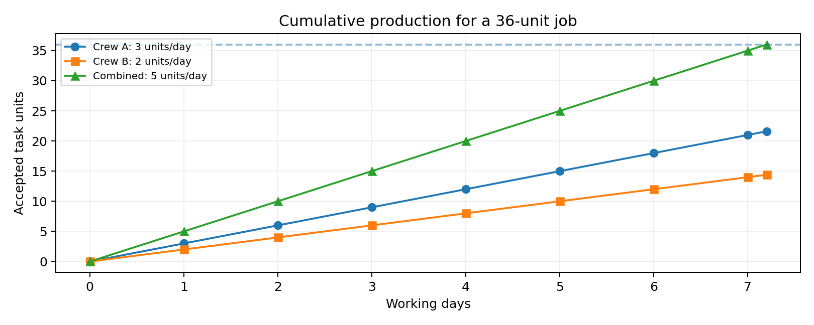
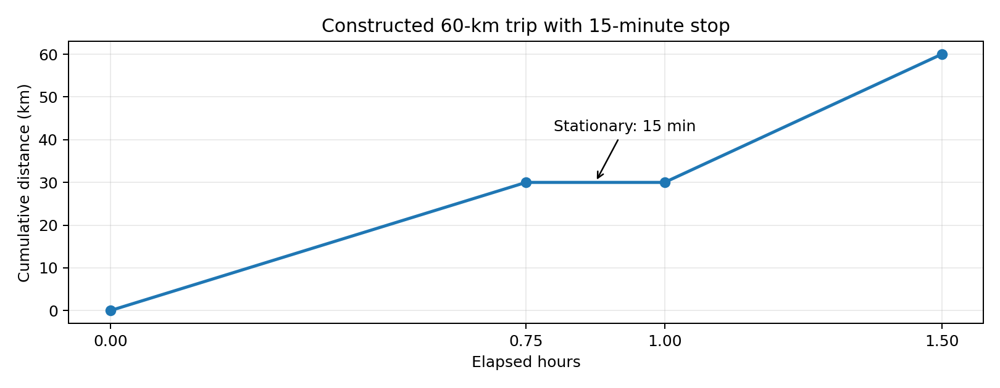
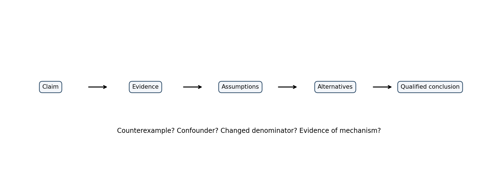

Integrated PDF · Editable master · Preserved original PDF
TGPSC Group I | Paper V: Science & Technology and Data Interpretation | Unit III: Data Interpretation and Problem Solving | Topic 4 | Prepared 25 October 2026
Status: independent English study draft; not academically approved. All questions and administrative numerical scenarios below are original practice, not official previous-year questions. Currency, worker counts, distances and operational data in worked examples are constructed teaching cases unless a dated official source is explicitly named. No student-facing source-page references are used.
Commission's exact topic line: “Time and Work, Speed -Time – Distance, Simple Interest, Analytical and Critical reasoning.” [S01]. The line is short, but it spans four connected competencies: translating a job into a measurable work rate; modelling journeys through distance, speed and time; calculating simple interest using consistent units; and evaluating whether a conclusion actually follows from premises and evidence. It does not explicitly require compound-interest formulae or advanced calculus. Compound interest is contrasted only to prevent confusing it with simple interest. The following syllabus map makes the coverage auditable.
| Official phrase | Concepts covered | Application and exam output |
|---|---|---|
| Time and Work | Work as a unit, rates, joint work, efficiency, alternating schedules, pipes, work allocation | Equations, timeline and labour planning |
| Speed–Time–Distance | Unit conversion, average/relative speed, trains, boats, circular tracks, distance–time graphs | Journey equations, graphs and interpretation |
| Simple Interest | Principal, rate, time, amount, unit consistency, reverse problems, split investments | Loan comparisons and arithmetic verification |
| Analytical reasoning | Conditions, constraints, syllogisms, arrangements, necessary/sufficient claims | Formal inference and counterexamples |
| Critical reasoning | Arguments, assumptions, causality, bias, evidence, policy trade-offs | Reasoned conclusions with limits |
Competence target: By the end, a learner should identify the correct denominator before calculating; construct a rate equation rather than guess; detect the difference between a true statement and a valid inference; and explain why a numerical result is not automatically a defensible policy recommendation.
Fast error audit: (i) Is the unit correct? (ii) Are the workers or vehicles active during the stated interval? (iii) Is the rate constant? (iv) Does the conclusion follow in all cases compatible with the premises? (v) Are administrative numbers illustrative or verified?
A quantitative word problem is a small model of the world. The story supplies quantities, constraints and a question; the equation represents only the features that matter. The most important distinction is between a stock and a flow. A completed irrigation channel is a stock of work; metres of excavation per day are a flow. Distance is a stock accumulated during travel; kilometres per hour is a rate. Interest earned over a period is a cumulative amount; an annual interest percentage is a rate applied to principal. Confusing the two is the source of many formula mistakes.
A reliable translation follows four operations. First define one full job, one complete journey, or one investment as the reference unit. Second list known rates with dimensions: job/day, km/hour, rupees/year. Third write a conservation statement: work completed = work required, distance covered = route length, total interest = sum of period interests. Finally test the result against a boundary case. If two identical workers each need ten days, together they must need five days under constant independent productivity; any answer greater than ten is immediately implausible. If a traveller goes faster on both legs of the same route, the total time must fall. These tests are not substitutes for proof, but they expose arithmetic errors.
Assumptions must be visible. A work-rate problem usually assumes constant output, no rework, no interference, identical job quality and no rest delays. Real construction projects have weather, logistics, quality checks and learning curves; a mathematical answer is therefore a baseline estimate, not a guaranteed completion date. Travel problems generally assume constant segment speed, known route length and no stoppages unless stated. A simple-interest exercise assumes interest is calculated on the original principal rather than capitalised. Critical reasoning requires identifying which assumptions are not licensed by the evidence.
Units and denominators: 18 worker-days means one worker working 18 days, or three equally efficient workers working six days; it does not automatically mean 18 calendar days. A vehicle travelling 15 m/s travels 54 km/h because 15 × 3600/1000 = 54. An annual interest rate of 9% applied for eight months uses time 8/12 years. Dimensional consistency is a form of reasoning: an expression yielding km²/hour cannot be an ordinary speed.
Telangana illustration: A Mandal-level works office may compare water-tank cleaning crews, inspection journeys and short-term advances. Treat the numerical details in this chapter as teaching models, not government productivity norms or authorised lending terms. Public procurement, occupational safety and financial rules are separate questions; a correct calculation does not waive them.
Let the total job equal W = 1. If worker A completes it in 12 days at a constant rate, A produces 1/12 job per day. If B completes the same job in 18 days, B produces 1/18 job per day. Working independently but simultaneously, their combined daily output is 1/12 + 1/18 = 5/36 job. The required time is 36/5 = 7.2 days. Notice that adding the completion times (12 + 18) has no physical meaning: days are not contributions to a shared job. Adding their rates is justified because each contributes a fraction of the same job during each day.
Proof with an explicit job size: Suppose a job contains 36 equal task units. A produces 3 units/day and B 2 units/day; together they produce 5 units/day, so 36/5 days are required. Choosing 36 merely clears fractions; the result does not depend on this arbitrary unit. In exams, the least common multiple of individual times often simplifies arithmetic, but the fundamental model remains fractional rates. For three workers completing a common job in a, b and c days, joint time T satisfies 1/T = 1/a + 1/b + 1/c. For a worker leaving after x days, use x(1/a + 1/b) + (T−x)/a = 1, if only A remains after day x.
Fractional completion: A and B above work together for four days, completing 4 × 5/36 = 20/36 = 5/9 of the job. Remaining work is 4/9. If only B remains, the extra time is (4/9)/(1/18) = 8 days; total calendar time is 12 days. A common error is to calculate 18 × 4/9 as if 18 were a rate; that expression happens to be correct here because 18 days/job is the reciprocal of B's rate, but the reasoning should be explicit.
Generalisation: When the task is not homogeneous, choose weighted work units. Ten easy forms and ten difficult forms cannot be represented as twenty equal tasks unless processing times are equal. If the difficulty mix changes after the first week, the assumed constant work rate may fail. Administrators should distinguish nominal capacity (the mathematical rate) from effective capacity after interruptions and quality checks. A critical-thinking answer should say whether the stated rate is observed, estimated or merely assumed.
Efficiency is output per unit time for a specified task. Suppose A's efficiency is 150% of B's: if B produces two identical units/hour, A produces three. Their rate ratio is 3:2. For a fixed 30-unit task, A needs 10 hours and B needs 15 hours; the completion-time ratio is the inverse, 2:3. This inversion is the heart of efficiency questions. It is valid only for the same job and consistent work quality. A higher hourly output with more defects may not represent a higher rate of accepted work.
Worker-day method: If 12 equally efficient workers complete a project in 15 days, the project requires 180 worker-days. At the same productivity, 20 workers need 180/20 = 9 days. The familiar formula M1D1 = M2D2 assumes equal working hours, comparable skill, no crowding and no delays. If the new workers each operate at 80% of the original efficiency, their effective headcount is 20 × 0.8 = 16, so time becomes 180/16 = 11.25 days. Headcount alone is not a production measure.
Working hours matter: Eight workers working six hours/day for ten days contribute 480 worker-hours. Twelve equally skilled workers working eight hours/day would require 480/(12×8) = 5 days. If the original crew's work was disrupted by two days of rainfall, do not include idle hours as productive output. If a machine replaces manual effort, define a comparable accepted-output unit before combining its rate with human labour.
Telangana public works case (constructed): A drainage desilting plan requires 360 accepted cubic-metre units. Crew A averages 18 units/day; crew B averages 12 units/day. Together they would finish in 360/30 = 12 working days, assuming independent access to the channel. If a narrow stretch allows only one crew at a time, the combined-rate calculation is invalid: scheduling becomes a bottleneck problem. An answer worthy of mains marks states the rate result, identifies the access constraint and recommends a site-specific schedule rather than mechanically increasing labour.
Critical check: The 'more workers means proportionally fewer days' rule is a linear approximation. For small crews it may work; at a congested worksite, marginal productivity may decline. This is not a mathematical contradiction: the assumptions have changed. Always label whether a question asks for idealised output or realistic execution.
Many exam questions hide the key variable in a timeline. Suppose A works alone for three days at 1/10 job/day. A completes 3/10. B joins and both work at 1/10 + 1/15 = 1/6 job/day. The remaining 7/10 requires (7/10)/(1/6) = 21/5 = 4.2 days. Total elapsed time is 7.2 days. The three initial days cannot be multiplied by the later combined rate; the crew composition differs across the intervals. A compact table prevents mistakes: interval 0–3, A only, rate 1/10; interval 3–7.2, A+B, rate 1/6.
Alternating days: A completes a job in six days and B in nine. If A works on odd days and B on even days, each two-day cycle completes 1/6 + 1/9 = 5/18. Three cycles (six days) complete 5/6. A works on day seven and finishes the final 1/6 exactly. The answer is seven days, not the reciprocal of the average rate applied blindly without checking the final partial cycle. If the remaining fraction is smaller than the next worker's daily capacity, only a fraction of the final day is required if fractional days are permitted. Some questions assume full shifts; read the wording.
Negative work and rework: A supervisor discovers that 1/12 of a completed job must be redone because of a quality failure. This adds positive required work; it does not create a 'negative worker' unless an actual agent continuously destroys output. If a process removes previously completed units at a constant rate, the net rate can be modelled as production minus loss. Distinguish a one-time rework burden from an ongoing leakage rate.
When workers leave: If a team completes 40% of a job in four days, its observed rate is 0.1 job/day. If its headcount halves but output does not scale linearly, the remaining completion time cannot be inferred without a new efficiency assumption. Exam problems commonly provide that assumption implicitly by saying 'equally efficient'; administrative reports rarely do. The correct critical response is to state the missing premise rather than invent a completion date.
A filling pipe is a producer of water volume; an outlet is a remover. With a tank normalised to one unit, an inlet that fills it in eight hours has rate +1/8 tank/hour. A drain that empties a full tank in twelve hours has rate −1/12. If both are open from empty and the outlet operates at a constant flow regardless of water level, the net rate is 1/8 − 1/12 = 1/24 tank/hour. Filling requires 24 hours. The result being longer than eight hours is a plausibility check. If the outlet is stronger than the inlet, the tank cannot fill from empty under the stated constant-flow assumptions.
Delayed leak: A tap fills a tank in six hours. A leak begins after two hours and can empty a full tank in ten hours. During the first two hours the tap fills 2/6 = 1/3. Remaining 2/3 is filled at net rate 1/6 − 1/10 = 1/15 tank/hour. Extra time = (2/3)×15 = 10 hours, total = 12 hours. Applying the leak for all twelve hours would incorrectly remove water before the leak began.
Physical limitations: Actual discharge depends on hydraulic head, valve position, friction, pump curves and outlet geometry. A gravity drain may stop when the level falls below its intake. The constant-rate assumption is an examination simplification. A candidate should not claim a mathematical filling time is a hydraulic engineering design certificate. For an overhead tank, the public-health concern of contamination and the safety of pumping systems require separate evaluation.
Units: A pump rated 500 litres/minute fills a 15,000-litre tank in 30 minutes if there is no outflow. If a drain removes 100 litres/minute simultaneously, the net rate is 400 litres/minute, so filling takes 37.5 minutes. This direct volume approach is equivalent to fractional tank rates and is often less error-prone when absolute flow rates are supplied.
In a joint contract, compensation may be allocated by contribution rather than equal headcount. If A and B work for six days at 3 and 2 accepted units/day respectively, their contributions are 18 and 12 units, so a contribution-based payment of ₹15,000 divides in the ratio 3:2: ₹9,000 and ₹6,000. This arithmetic is not a legal wage determination. Applicable wage laws, contractual terms, minimum wages, safety obligations and non-discrimination requirements may override a simplistic proportional split. The exercise is about mathematical allocation, not authorising a pay scheme.
Unequal durations: If A works eight days at 4 units/day and B works five days at 6 units/day, accepted contributions are 32 and 30 units. Their share ratio is 16:15, not the efficiency ratio 2:3. In word problems, a ratio of daily rates and a ratio of total outputs are different quantities. In a construction context, task quality, supervisory work and fixed equipment costs can make a naive output-only allocation unfair or contractually wrong.
Critical-path idea: A field survey needs form design (2 days), data collection (5 days) and validation (3 days), strictly in sequence. Even an unlimited number of collectors cannot reduce the total below the non-parallel steps' ten days. If collection in different mandals can occur simultaneously, collection duration may shrink; but validation still depends on completed records. This shows why the reciprocal-rate model should be combined with dependency analysis for real projects.
Telangana illustration (constructed): A district office plans to verify 1,200 beneficiary records. Two independent teams validate 45 and 55 records/day. A naive total is 12 days. But if only 60 records/day can be uploaded because of a shared approval queue, the system's throughput is at most 60/day, implying at least 20 working days. The bottleneck, not the sum of individual team rates, determines throughput. This is an important distinction between analytical problem-solving and routine arithmetic.
Speed is distance travelled per unit time, a non-negative scalar. Velocity adds direction. Most competitive-exam questions use speed, but relative-motion questions need directional reasoning. The defining equation is d = vt when speed v is constant over interval t. If a bus covers 180 km in four hours, its average speed is 45 km/h. This does not imply it travelled at exactly 45 km/h every minute; stops and accelerations can yield the same total average. The distinction becomes crucial when estimating schedules or interpreting a GPS trace.
Conversions: 72 km/h = 72×5/18 = 20 m/s. Conversely 12.5 m/s = 12.5×18/5 = 45 km/h. For a train 200 metres long moving at 20 m/s, passing a fixed pole requires 200/20 = 10 seconds. The distance is the train's length, not the distance between two stations. For a vehicle travelling at 60 km/h for 45 minutes, time is 3/4 hour, so distance is 45 km. If the problem mixes minutes, seconds and hours, convert before substituting.
Stops and average speed: A bus drives 120 km in two hours and stops for 30 minutes. Journey average speed including the stop is 120/2.5 = 48 km/h, while moving average speed is 60 km/h. Neither is inherently wrong; they answer different questions. A transport administrator must specify which performance indicator is being used. Scheduled journey time includes boarding and dwell time; engineering vehicle speed does not.
Time saved by faster travel: For a fixed route d, time saving from increasing speed u to v is d(1/u − 1/v). Over 120 km, increasing from 40 to 60 km/h saves 120/40 − 120/60 = 1 hour. Doubling speed halves moving time, but it does not necessarily halve total journey time if loading, queues or fixed delays remain. This is the same bottleneck logic encountered in work-rate problems.
Relative speed measures how fast the gap between two moving objects changes. Two vehicles approach each other from opposite directions at 40 and 50 km/h. Their separation shrinks at 90 km/h; if initially 270 km apart, they meet after 270/90 = 3 hours. In the same direction, if a faster vehicle at 60 km/h follows a slower one at 45 km/h, the gap closes at 15 km/h. A 30-km initial gap takes two hours to close. The sign of the velocity is the rigorous foundation: assign east as positive, then relative velocity is v_A − v_B.
Train problems: A 180-metre train passes a 120-metre platform at 15 m/s. The train must move 180 + 120 = 300 metres from the moment its front reaches the platform to the moment its rear leaves it. Time = 300/15 = 20 seconds. For two trains passing each other, the relevant distance is the sum of their lengths; relative speed is the sum when directions oppose and the absolute difference when they move together. Do not use a platform length when crossing a pole, because a pole has negligible length in the model.
Meeting-point distance: If A and B start 210 km apart, move towards each other at 30 and 40 km/h and start together, meeting time is three hours. A travels 90 km and B 120 km. Their distances divide in the ratio of speeds 3:4 because they travel for the same duration. If one starts an hour later, this simple ratio no longer holds over the entire journey. Subtract the first traveller's head start from the initial gap and solve for the shared travel interval.
Public transport interpretation: A reported speed difference does not by itself prove a service is better. Vehicle occupancy, route safety, reliability, accessibility and total door-to-door time matter. A 15-minute faster bus may be less useful if its waiting interval is an hour. Critical reasoning asks whether the metric represents the passenger's actual objective.
Average speed is always total distance divided by total elapsed time. Suppose a motorist travels 60 km at 30 km/h and returns the same 60 km at 60 km/h. The first leg takes two hours and the second one hour; the round trip is 120 km in three hours, giving 40 km/h, not the arithmetic average of 45 km/h. The slower leg occupies more time and therefore has more influence on the total. For equal-distance legs at speeds u and v, average speed = 2uv/(u+v), the harmonic mean. This formula should be derived, not memorised blindly: total distance 2d divided by d/u + d/v.
Equal-time legs: If a vehicle drives one hour at 30 km/h and another hour at 60 km/h, it covers 90 km in two hours and averages 45 km/h. Here the arithmetic mean is correct because time, not distance, is equal. Exams often switch these conditions to test whether the candidate notices the denominator. A route with three segments should be handled by summing each segment's distance and time explicitly.
Circular track: Two runners start at the same point on a 400-metre circular track, running in the same direction at 5 m/s and 3 m/s. The faster gains 2 metres per second, so the first overtake occurs after 400/2 = 200 seconds. If they run in opposite directions, their separation along the track closes at 8 m/s, so the first meeting after departure occurs at 400/8 = 50 seconds. 'Meeting' and 'overtaking' describe different geometric events. If starting points differ, include the initial arc separation.
Races: If A runs 100 metres while B runs 80 metres in the same time, their speed ratio is 5:4. When A runs a 100-metre race, B is 20 metres behind at the instant A finishes. It is incorrect to say A is 20% faster in all percentage conventions: A's speed is 25% greater than B's, while B's speed is 20% less than A's. Percentage comparison depends on the base.
For a boat moving through still water at speed b and a river current of speed c, downstream ground speed is b+c and upstream ground speed is b−c. If downstream speed is 18 km/h and upstream speed is 10 km/h, then b = (18+10)/2 = 14 km/h and c = (18−10)/2 = 4 km/h. The model assumes a steady current and the same propulsion effort both ways. The upstream speed must be positive for the boat to make headway; if c ≥ b, an upstream trip against the current cannot progress in this simple model.
Round trip: A boat travels 28 km downstream at 14 km/h and returns upstream at 7 km/h. It takes two hours down and four hours back, covering 56 km in six hours. Average ground speed is 56/6 = 9⅓ km/h. The arithmetic mean of 14 and 7 is 10.5 km/h, which is wrong for equal distances. The river problem is another application of the harmonic-mean principle, not a separate trick.
Moving walkway: A passenger walks at 1.5 m/s relative to a walkway moving at 0.5 m/s in the same direction. Ground speed is 2.0 m/s. Walking against the walkway gives ground speed 1.0 m/s. If the passenger stands still, ground speed is 0.5 m/s. These problems are physically the same as boats and currents. Always specify whether a speed is measured relative to the moving surface or the stationary ground.
Why the model can fail: Real currents vary across a river, with depth and season; a boat's trajectory may be diagonal to counter drift. A simple scalar addition works when velocities are collinear. With perpendicular components, vector addition is required. Competitive-exam questions generally signal when such geometry is needed. Do not use the downstream/upstream shortcut for a cross-river problem without considering directions.
On a distance–time graph, slope represents speed when the vertical axis is distance and the horizontal axis is time. A straight rising segment denotes constant positive speed; a horizontal segment denotes rest; a steeper rising segment denotes faster movement. If the vertical axis is displacement rather than cumulative distance, a downward slope may represent motion in the negative direction. Labelled axes therefore matter more than the appearance of the line. A curved distance–time line represents changing speed, and its instantaneous slope at a point gives instantaneous speed where differentiability applies.
On a speed–time graph, the area under the curve gives distance. A vehicle travelling at 12 m/s for ten seconds covers 120 metres. If speed rises linearly from zero to 12 m/s over ten seconds, the triangular area is ½ × 10 × 12 = 60 metres. The slope of a speed–time graph is acceleration, not speed. When a graph plots velocity with positive and negative values, signed area gives displacement; absolute area gives distance. Mixing these concepts is a common conceptual error.
Constructed bus schedule: A bus covers 30 km in the first 45 minutes, waits 15 minutes and then covers 30 km in 30 minutes. The three graph segments have slopes 40 km/h, 0 and 60 km/h. Total distance is 60 km; total time is 1.5 hours; overall average speed is 40 km/h. A graph that omits the waiting interval would incorrectly report 60/1.25 = 48 km/h. In public-service monitoring, definitions of trip time, dwell time and route coverage should be standardised before comparison.
Graph interpretation under missing observations (constructed): Suppose a vehicle's odometer shows 0 km at 09:00, 24 km at 09:30, and 24 km at 09:45. The first observed interval has mean speed 24/0.5 = 48 km/h. The second interval shows zero recorded change over fifteen minutes. If the odometer is continuously observed and functioning, a horizontal cumulative-distance line represents rest. But if the last reading was cached because GPS or telemetry stopped reporting, the same drawn line does not prove the vehicle was stationary. Check timestamps, sensor health and whether each plotted point is a fresh measurement before interpreting a flat segment. A missing observation is not a zero-valued observation.
Piecewise speed–time cross-check (constructed): A vehicle accelerates uniformly from 0 to 10 m/s in 10 seconds, maintains 10 m/s for 20 seconds, then decelerates uniformly to rest over 10 seconds. Distances are triangular ½×10×10 = 50 m, rectangular 10×20 = 200 m and triangular ½×10×10 = 50 m. Total is 300 m over 40 seconds, so the whole-interval average speed is 7.5 m/s. The peak speed of 10 m/s and average of the three segment speeds, if weighted equally, are not substitutes for total distance divided by total elapsed time. If the deceleration is not uniform, its distance cannot be inferred from just the start/end speeds and duration. These cases show why axis labels, sampling quality and motion assumptions belong in an answer, not merely in a footnote.
Evidence interpretation: Graph axes can exaggerate change if they begin above zero; irregular time intervals can distort visual slopes; smoothing can conceal short disruptions. Critical reasoning requires reading the underlying scale and definition, not inferring a policy conclusion from the visual impression alone. The diagram in this chapter explicitly marks a stationary interval so that learners can distinguish distance, time and slope.
Simple interest is compensation for the use of an original principal over time without adding accrued interest to the principal for subsequent interest calculations. For principal P rupees, annual rate R percent and time T years, SI = PRT/100. The final amount is A = P + SI = P(1 + RT/100). A ₹20,000 advance at 6% simple interest per annum for 18 months yields SI = 20,000 × 6 × 1.5/100 = ₹1,800; amount = ₹21,800. The time conversion is essential: 18 months is 1.5 years, not 18 years.
Reverse problems: If ₹4,000 simple interest accrues on ₹25,000 over two years, annual R = 100×4,000/(25,000×2) = 8%. If P=₹12,000, R=5% and SI=₹1,800, time T=100×1,800/(12,000×5)=3 years. If an amount becomes ₹11,500 after three years at 5% simple interest, principal P = 11,500/(1+0.05×3) = ₹10,000. Each inverse formula follows algebraically from the same identity; memorising multiple disconnected rules is unnecessary.
Rate conventions: '6%' is incomplete unless the period is known. For a 90-day calculation, some contracts use actual/365 and others use 30/360 conventions. Under simple interest, ₹36,500 at 10% for 90 days gives ₹900 under actual/365, but ₹912.50 under a 360-day denominator. Neither convention should be silently assumed in a real financial transaction. An examination question may specify 'one year = 360 days' or 'one year = 365 days'; obey the question. Leap years add another consideration when actual-day counting is used.
Regulatory distinction: A correct SI calculation is not a claim that a particular lender may charge the rate. Real lending is governed by applicable agreements, disclosure duties, consumer-protection requirements and sectoral regulation. The Reserve Bank of India publishes regulatory guidance; it does not make every arithmetic classroom example a sanctioned loan product. This chapter uses illustrative amounts only.
When principal or rate changes, calculate interest separately for each period and add the results. Suppose ₹10,000 is invested at 6% for the first year and 8% for the next two years, with no interest capitalisation. Total SI = 10,000×6×1/100 + 10,000×8×2/100 = ₹600 + ₹1,600 = ₹2,200. Applying 8% for all three years overstates interest; averaging the rates without weighting by time can also fail. If the principal is partially repaid, later interest is calculated on the remaining principal under the stated simple-interest contract.
Split principal: ₹30,000 is divided between 5% and 8% simple interest for two years. Total interest is ₹3,900. Let x be invested at 5%; 30,000−x at 8%. Then 0.10x + 0.16(30,000−x) = 3,900, so 0.06x = 900 and x = ₹15,000. The other ₹15,000 earns 8%. The answer should be checked: ₹1,500 + ₹2,400 = ₹3,900. A simultaneous-equation approach works even when two durations differ.
Comparing offers: A loan quoted at 10% simple interest per year and a loan quoted at 10% compounded annually are not equivalent over multiple years. For ₹10,000 over two years, simple interest yields ₹2,000; annual compounding yields ₹2,100. This contrast is included to prevent a category error, not to expand the official syllabus into compound-interest computation. Processing fees, repayment timing, effective annual rates and risk can matter more than the headline percentage. A fair comparison must align the amount, term, cash-flow dates and fees.
Instalment caution: Equal monthly repayments are not automatically modelled by applying SI to the original principal for the full term. Interest may be calculated on a reducing balance, flat principal or another contractual basis. If a question supplies a flat-interest rule, use it; otherwise ask what 'simple interest' means in the stated cash-flow structure. Analytical reasoning includes recognising when a unique numerical answer is impossible without that missing rule.
Analytical reasoning asks what must, may or cannot follow from stated conditions. Begin by translating natural language into a formal structure. 'All inspectors are trained' means every member of the inspector set belongs to the trained set. It does not imply every trained person is an inspector. 'Some inspectors are trained' asserts at least one overlap; it does not mean 'most' or 'all'. 'No approved record is incomplete' means the approved and incomplete sets are disjoint. A Venn diagram can make these relationships visible, but the logic does not depend on drawing a perfect circle.
Conditional reasoning: 'If the permit is valid, entry is allowed' has the form P→Q. From P one may infer Q (modus ponens). From not-Q one may infer not-P (modus tollens), assuming the rule is correctly stated and no exceptions. From Q alone one cannot infer P: other conditions might also allow entry. This fallacy is affirming the consequent. From not-P alone one cannot infer not-Q: this is denying the antecedent. 'Only if' marks a necessary condition: 'entry only if the permit is valid' means entry→valid permit, not the reverse. 'If and only if' states both directions.
Arrangement constraints: Suppose three files A, B and C must be reviewed in sequence. A precedes B, and C is not first. The possible orders satisfying both constraints are A–B–C and A–C–B; B–A–C violates A before B, while C–A–B violates C not first. Rather than guessing, enumerate or construct a table. For more items, use a grid and mark definite, excluded and undecided positions. A condition 'immediately before' is stronger than 'before'.
Necessary versus sufficient: A budget allocation may be necessary for a project, but it is not sufficient for completion; procurement, land, staff and approvals may also be required. A completed project may imply that certain permissions existed, but it does not prove every procedural safeguard was followed. These distinctions connect formal logic to administrative reasoning and prevent unsupported conclusions from one favourable indicator.
An argument consists of premises offered in support of a conclusion. A strong evaluation first identifies the conclusion, then asks what additional assumption connects the evidence to it. Consider: 'After new buses were introduced, average commute time fell; therefore the buses caused the entire reduction.' The before–after pattern is compatible with the claim but does not establish it. Roadworks may have ended, school holidays may have reduced traffic, or the surveyed routes may have changed. To strengthen the causal inference, compare similar routes without the intervention, control for season and demand, and check whether the outcome was measured consistently.
Correlation versus causation: Two variables can move together because A causes B, B causes A, a third factor causes both, or the pattern is coincidental. A rigorous answer names plausible alternatives rather than merely repeating 'correlation is not causation'. For a proposed policy, specify the mechanism, predicted intermediate outcome and an observation that could disconfirm the hypothesis. If an intervention is targeted to the worst-performing districts, simple before–after improvements may partly reflect regression to the mean.
Sampling and denominator traps: 'Complaints fell from 200 to 150' is a 25% decline in count. But if service users fell from 20,000 to 10,000, the complaint rate rose from 1% to 1.5%. The appropriate denominator depends on the policy question. Surveys can be biased by who responds, which villages are reachable, and whether the question wording changed. A percentage with no sample size or definition may be misleading. A mean can hide distributional differences: two mandals may have the same average wait but very different worst-case experiences.
Argument quality: A valid deductive argument guarantees its conclusion if its premises are true; a sound argument is both valid and based on true premises. Inductive arguments instead support conclusions probabilistically. A false dilemma presents only two options when more exist; an ad hominem attacks a person instead of the claim; a hasty generalisation extrapolates from too few cases. A policy critique should test trade-offs fairly: faster verification may reduce backlog but increase false rejection if quality controls are weakened. A conclusion should specify uncertainty, safeguards and evidence needed.
Case A — seasonal desilting (constructed): A gram panchayat needs 240 standardised work units. Crew A can complete 16/day and crew B 14/day. Ideal joint time is 240/30 = eight working days. But a safety inspection stops work for one day after the first three productive days. Elapsed time becomes nine days if all other assumptions hold. If one crew is reassigned after the inspection, recalculate the remaining 150 units at the new active rate rather than quoting eight days. A competent answer separates productive days from calendar days and flags rainfall and site-access risk.
Case B — inspection travel (constructed): An officer must cover a 90-km outward route at 45 km/h and return at 30 km/h. Travel time is 2+3 = five hours; average speed is 180/5 = 36 km/h. If two hours are spent on inspection, total duty time is seven hours, and the journey-wide movement speed is not the same as the average rate of accomplishing inspection tasks. Scheduling should also account for road safety, mandated breaks and realistic delays. The shortest mathematical time is not always a lawful or prudent timetable.
Case C — temporary advance (constructed): An association provides a ₹50,000 advance at 7% simple interest for nine months. Interest = 50,000×7×(9/12)/100 = ₹2,625; amount = ₹52,625. This is only a classroom computation; the exercise makes no representation about legal eligibility, permissible interest or applicable financial disclosures. If repayments occur before maturity, the amount cannot be fixed without specifying how principal reductions affect interest.
Case D — evidence-based policy (constructed): A district dashboard reports that average processing time fell from ten to seven days after a software change. This is a 30% reduction in mean elapsed time. To claim that the software caused the reduction, request comparable case mixes, processing volumes, error rates, staffing changes and median as well as upper-percentile times. If incomplete applications were excluded after the change, the denominator changed. An administrator should publish a definition of the indicator and audit excluded cases before celebrating improvement.
Institutional context: The Telangana Directorate of Economics and Statistics compiles and disseminates official state statistics [S03]; the state's Socio-Economic Outlook provides sectoral context [S04]. The Ministry of Statistics and Programme Implementation publishes official national indicators and release calendars [S05–S07]. These bodies are appropriate sources for real figures; the cases above are invented precisely to avoid misrepresenting official data. Mathematics supplies a reproducible calculation, while public administration requires validated evidence, fairness and operational constraints.

Figure 1: The constructed job has 36 task units. A alone contributes three units/day and B two units/day; combined production is five units/day. The shaded bars show why rates add but durations do not. The visual assumes simultaneous, non-interfering work.

Figure 2: The cumulative-distance line has slopes of 40 km/h, zero and 60 km/h. The trip covers 60 km in 90 minutes, including the stop. Its overall average is 40 km/h; the final segment's speed must not be reported as the whole-trip average.

Figure 3: A critical-reasoning answer traces claim → evidence → hidden assumptions → alternative explanations → bounded conclusion. The chart is an original study diagram, not a depiction of an official government decision workflow.
The following drills are deliberately not multiple-choice: they train the full method, including the unit, the equation and a reasonableness check. Every dataset is constructed for learning. Where a practical limitation is relevant, it is stated rather than silently ignored.
Drill 1 — joint work and a departure. A completes a job in 16 days and B in 24 days. They work together for six days, after which B leaves. Combined rate = 1/16 + 1/24 = 5/48 job/day. Six days complete 30/48 = 5/8; remaining = 3/8. A alone needs (3/8)×16 = 6 days. Total = 12 days. Check: the first phase produces 62.5% and the second 37.5%.
Drill 2 — efficiency conversion. A is 25% more efficient than B. Together they finish a job in nine days. Let B's rate be x and A's be 1.25x; 2.25x = 1/9, so x = 4/81 and A's rate = 5/81. B alone needs 81/4 = 20.25 days; A alone needs 81/5 = 16.2 days. The faster worker must have the shorter completion time.
Drill 3 — a three-worker project. A, B and C can finish independently in 12, 18 and 36 days. Joint rate = 3/36 + 2/36 + 1/36 = 1/6 job/day. Six days suffice. If C is absent, rate becomes 5/36 and time 7.2 days. This demonstrates the marginal contribution of a worker rather than adding the three durations.
Drill 4 — partial shift. A team completes 1/5 of a job each full day. It works 2.5 days, then productivity falls to 1/10 per day. The first phase completes 1/2. The remaining 1/2 needs five days at the reduced rate. Elapsed time = 7.5 days, assuming a fractional shift is allowed. The productivity change must be represented as a separate interval.
Drill 5 — alternating workers. A finishes in eight days, B in twelve; A works on odd days and B on even days. Each two-day cycle completes 1/8 + 1/12 = 5/24. After eight days, 20/24 = 5/6 is done. On day nine A adds 1/8 = 3/24, leaving 1/24. On day ten B needs (1/24)/(1/12)=1/2 day. Total 9.5 days if half-day work is allowed.
Drill 6 — tank leak after opening. An inlet fills a tank in ten hours; a leak empties it in fifteen hours. Both are active from empty. Net rate = 1/10 − 1/15 = 1/30 tank/hour. Thirty hours fill the tank. If the leak is closed halfway through the volume, the first half takes 15 hours and the second half takes five hours; 20 hours total. A change in valve status changes the rate.
Drill 7 — workforce and hours. Ten workers at six hours/day complete a task in 12 days: 720 worker-hours. At the same productivity, eight workers at nine hours/day need 720/(8×9)=10 days. The model assumes identical output per hour and ignores fatigue; this is a planning estimate, not an occupational standard.
Drill 8 — work allocation. Two equally paid teams contribute 24 and 36 accepted units to a ₹30,000 output-based pool. Ratio 2:3 yields ₹12,000 and ₹18,000. This does not determine legal wages or contractual entitlements; it only computes a proportional split under a stated hypothetical rule.
Drill 9 — unit conversion and a pole. A 240-metre train travels at 54 km/h = 15 m/s. Passing a pole takes 240/15 = 16 seconds. Passing a 210-metre platform takes (240+210)/15 = 30 seconds. The difference comes from the additional platform length.
Drill 10 — delayed departure. Two towns are 300 km apart. A starts towards B at 50 km/h; B starts towards A one hour later at 40 km/h. A first covers 50 km. Remaining gap = 250 km. After B starts, closing speed = 90 km/h; meeting occurs after 25/9 hours. Total time after A's departure = 1+25/9 = 34/9 hours (3 h 46 min 40 s). Check the distances: A covers 50×34/9, B covers 40×25/9; their sum is 300.
Drill 11 — equal-distance average. A delivery vehicle covers 80 km at 40 km/h and 80 km at 80 km/h. Total time = 2+1 = 3 hours, distance = 160 km, average = 160/3 = 53⅓ km/h. Arithmetic average 60 km/h is wrong because the slow leg takes twice as long.
Drill 12 — speed with a stop. A bus drives 150 km at 50 km/h and waits 45 minutes. Total elapsed time = 3.75 hours; overall average = 150/3.75 = 40 km/h. The moving average remains 50 km/h. The chosen indicator must be stated.
Drill 13 — overtaking. A car at 72 km/h overtakes a lorry at 54 km/h, both in the same direction. Relative speed = 18 km/h = 5 m/s. If the combined lengths and safety separation to clear total 75 metres, the passing manoeuvre takes 75/5 = 15 seconds under constant speeds. Real-world safe overtaking requires road geometry and margins beyond this simplified arithmetic.
Drill 14 — circular track. Two cyclists on a 600-metre circuit move in opposite directions at 8 and 7 m/s. They first meet after 600/(8+7)=40 seconds. If they travel in the same direction, first overtake takes 600/(8−7)=600 seconds. The initial positions are assumed identical.
Drill 15 — boats. A boat travels 30 km downstream in 2 hours and returns upstream in 3 hours. Ground speeds are 15 and 10 km/h. Still-water speed = 12.5 km/h and current = 2.5 km/h. The round-trip average speed is 60/5 = 12 km/h, not 12.5 km/h.
Drill 16 — time from a graph. A route graph passes through (0 h,0 km), (1 h,30 km), (1.5 h,30 km), (2.5 h,90 km). Segment speeds are 30, 0 and 60 km/h; overall average is 90/2.5=36 km/h. The horizontal segment indicates a half-hour halt, not negative motion.
Drill 17 — simple-interest reverse rate. A ₹18,000 principal earns ₹2,700 simple interest in 2.5 years. R = 100×2700/(18000×2.5)=6% annually. Check: annual interest ₹1,080; for 2.5 years ₹2,700.
Drill 18 — split investment. ₹40,000 is invested for one year, partly at 5% and the rest at 9%. Total simple interest is ₹2,800. If x is at 5%, 0.05x+0.09(40000−x)=2800, giving 0.04x=800, x=₹20,000. Each part contributes ₹1,000 and ₹1,800 respectively.
Drill 19 — logical validity. Premises: Every audited record is logged; some logged records are pending. Conclusion proposed: Some audited records are pending. This does not necessarily follow. A counterexample is that all audited records are completed and the pending logged records were never audited. The overlap of audited and pending sets has not been established.
Drill 20 — critical policy inference. A district reports 20% fewer unresolved complaints after adding staff. Does staffing explain the change? Not necessarily. The incoming complaint count, classification rules, staffing mix, closure quality and time period may have changed. A better evaluation compares incoming and resolved rates, uses the same case definition, audits reopened cases and considers similar districts without the staffing change. The correct answer is a bounded inference, not an unsupported claim of causation.
Provenance: All thirty are original practice questions prepared for this chapter. They are not presented as TGPSC official PYQs. Choose one best answer and review the explanation even if the choice was correct.
MCQ 01. A alone completes a job in 15 days and B in 10 days. Joint time?
A. 5 days
B. 6 days
C. 12 days
D. 25 days
Answer: B. 6 days
Explanation: Rates add: 1/15+1/10=1/6 job/day; reciprocal is 6 days.
MCQ 02. A and B finish in 8 days; A alone needs 12 days. B alone needs?
A. 16 days
B. 20 days
C. 24 days
D. 32 days
Answer: C. 24 days
Explanation: B rate=1/8−1/12=1/24 job/day, so 24 days.
MCQ 03. If efficiency ratio A:B is 4:5, the time ratio for identical work is?
A. 4:5
B. 5:4
C. 9:4
D. 1:1
Answer: B. 5:4
Explanation: Time is inversely proportional to rate for a fixed job: 5:4.
MCQ 04. Six workers finish in 20 days. Ten equally efficient workers need?
A. 8 days
B. 10 days
C. 12 days
D. 14 days
Answer: C. 12 days
Explanation: Work=6×20=120 worker-days; 120/10=12 days.
MCQ 05. A finishes 1/3 job in four days. Whole job takes?
A. 8 days
B. 10 days
C. 12 days
D. 16 days
Answer: C. 12 days
Explanation: Constant rate=(1/3)/4=1/12 job/day, hence 12 days.
MCQ 06. A tap fills in 6 hours; a drain empties in 9 hours. Both open from empty; filling time?
A. 3 hours
B. 9 hours
C. 12 hours
D. 18 hours
Answer: D. 18 hours
Explanation: Net rate=1/6−1/9=1/18 tank/hour.
MCQ 07. Two crews complete 40% of a job in five days. At unchanged combined rate, remaining time?
A. 5 days
B. 6 days
C. 7.5 days
D. 12.5 days
Answer: C. 7.5 days
Explanation: Rate=.4/5=.08 job/day; remaining .6/.08=7.5 days.
MCQ 08. A works 3 days at 1/9 job/day, then B completes remainder at 1/6 job/day. Total time?
A. 6 days
B. 7 days
C. 8 days
D. 9 days
Answer: B. 7 days
Explanation: A does 1/3; B does 2/3 in 4 days; total 7 days.
MCQ 09. Eight workers each work five hours per day for 12 days. What is the total labour input in worker-hours?
A. 240
B. 360
C. 480
D. 600
Answer: C. 480
Explanation: Eight people each contribute 5×12=60 hours; aggregate labour input is 8×60=480 worker-hours. Calendar elapsed work time is 12 days, not 480 hours.
MCQ 10. Which condition invalidates adding independent work rates?
A. Workers share a job unit
B. Work quality is comparable
C. Only one crew can access the narrow worksite
D. Both rates are in jobs/day
Answer: C. Only one crew can access the narrow worksite
Explanation: If only one crew can work at a time, rates cannot be simultaneously realised.
MCQ 11. Convert 90 km/h to m/s.
A. 15
B. 20
C. 25
D. 30
Answer: C. 25
Explanation: Multiply by 5/18: 90×5/18=25 m/s.
MCQ 12. A vehicle travels 84 km in 1 hour 24 minutes. Average speed?
A. 54 km/h
B. 60 km/h
C. 64 km/h
D. 70 km/h
Answer: B. 60 km/h
Explanation: 1 h 24 min=1.4 h; 84/1.4=60 km/h.
MCQ 13. A 150-m train passes a pole at 10 m/s. Time?
A. 10 s
B. 15 s
C. 20 s
D. 25 s
Answer: B. 15 s
Explanation: To clear a pole, train travels its own 150-m length; 150/10=15 s.
MCQ 14. A 100-m train crosses a 200-m platform at 15 m/s. Time?
A. 10 s
B. 15 s
C. 20 s
D. 30 s
Answer: C. 20 s
Explanation: Distance to clear=100+200=300 m; 300/15=20 s.
MCQ 15. Two cars approach each other at 35 and 45 km/h from 240 km apart. Meeting time?
A. 2 h
B. 3 h
C. 4 h
D. 6 h
Answer: B. 3 h
Explanation: Closing speed=80 km/h; 240/80=3 h.
MCQ 16. Two cars move same direction at 70 and 50 km/h. Faster closes a 60-km gap in?
A. 2 h
B. 3 h
C. 4 h
D. 6 h
Answer: B. 3 h
Explanation: Relative speed=20 km/h; 60/20=3 h.
MCQ 17. Equal-distance legs at 30 and 60 km/h yield average speed?
A. 40 km/h
B. 45 km/h
C. 48 km/h
D. 50 km/h
Answer: A. 40 km/h
Explanation: Harmonic mean 2×30×60/(30+60)=40 km/h.
MCQ 18. Equal-time legs at 30 and 60 km/h yield average speed?
A. 40 km/h
B. 42 km/h
C. 45 km/h
D. 48 km/h
Answer: C. 45 km/h
Explanation: For equal times, distance weights equally by duration; arithmetic mean=45 km/h.
MCQ 19. Boat speed in still water 12 km/h, stream 3 km/h. Upstream speed?
A. 9 km/h
B. 12 km/h
C. 15 km/h
D. 36 km/h
Answer: A. 9 km/h
Explanation: Upstream ground speed=12−3=9 km/h.
MCQ 20. Two runners start together from the same point on a 300-m circular track, running in opposite directions at 4 and 6 m/s. When is their first reunion after departure?
A. 20 s
B. 30 s
C. 50 s
D. 75 s
Answer: B. 30 s
Explanation: Excluding the initial shared position at t=0, their first subsequent meeting occurs when their combined arc distance equals one circumference: (4+6)t=300, so t=30 s. This assumes constant speeds and opposite directions.
MCQ 21. A horizontal segment of a cumulative-distance versus time graph means?
A. Constant high speed
B. Rest
C. Negative speed
D. Acceleration
Answer: B. Rest
Explanation: Cumulative distance does not change while time passes: zero speed.
MCQ 22. Simple interest on ₹10,000 at 8% annually for 9 months?
A. ₹400
B. ₹600
C. ₹800
D. ₹900
Answer: B. ₹600
Explanation: SI=10000×8×(9/12)/100=₹600.
MCQ 23. Principal ₹20,000 earns ₹3,000 simple interest in 3 years. Annual rate?
A. 4%
B. 5%
C. 6%
D. 7%
Answer: B. 5%
Explanation: R=100×3000/(20000×3)=5%.
MCQ 24. ₹12,000 becomes ₹13,800 at 5% simple interest annually. Time?
A. 2 years
B. 2.5 years
C. 3 years
D. 4 years
Answer: C. 3 years
Explanation: SI=1800; T=100×1800/(12000×5)=3 years.
MCQ 25. Which expression is simple-interest amount with annual rate R% for T years?
A. P(1+R/100)^T
B. P+RT
C. P(1+RT/100)
D. PRT
Answer: C. P(1+RT/100)
Explanation: Simple interest is PRT/100, added to principal P.
MCQ 26. If interest is calculated on original principal without capitalising accrued interest, it is?
A. Compound interest
B. Simple interest
C. A guaranteed yield
D. A discount factor
Answer: B. Simple interest
Explanation: Simple interest retains original principal as base; actual terms must still be specified.
MCQ 27. All supervisors are trained. Some trained people are volunteers. Must some supervisors be volunteers?
A. Yes, always
B. No, not necessarily
C. Yes, if training is long
D. Only when volunteers are paid
Answer: B. No, not necessarily
Explanation: Both groups lie inside trained, but their overlap is not guaranteed.
MCQ 28. If P implies Q, and Q is observed, what follows?
A. P must be true
B. P must be false
C. P may or may not be true
D. Q must be false
Answer: C. P may or may not be true
Explanation: Affirming the consequent is invalid: other causes of Q may exist.
MCQ 29. Complaints fall 200 to 150 while service users halve 20,000 to 10,000. Complaint rate?
A. Falls from 1% to .75%
B. Rises from 1% to 1.5%
C. Stays 1%
D. Cannot compute
Answer: B. Rises from 1% to 1.5%
Explanation: 200/20000=1%; 150/10000=1.5%; count fell but rate rose.
MCQ 30. A new policy starts before waiting time falls. Strongest critical conclusion?
A. Policy certainly caused fall
B. Timing proves mechanism
C. Other causes and denominator changes must be tested
D. Waiting time cannot be measured
Answer: C. Other causes and denominator changes must be tested
Explanation: Temporal order is necessary for causation but insufficient; test confounders and measurement.
Scope and provenance. These are ten EXISTING original practice questions, not official TGPSC PYQs. The four answer choices for each item were examined separately against explicit arithmetic, logical counterexamples, and the methodological sources listed below. This is bounded author-side verification of 10 keys and 30 distractors, not named independent academic approval, nor verification of the other 20 keys/60 distractors. No original question, key or legacy PDF is replaced in this audit. Sources explain general principles; all example figures are constructed.
All ten inherited keys (Q21–Q30) remain uniquely defensible under their stated classroom assumptions; each of 30 distractors was checked individually above. No official PYQ status is claimed. Quality flags: Q26 C/D, Q27 C/D and Q30 D are weak distractors; improve in a separate controlled revision with revalidation. The existing bank's distribution (A=2, B=14, C=13, D=1) is highly skewed; do not rotate answers mechanically. Remaining: Q1–Q20 (20 keys/60 distractors), six mains claim-level audit, three diagram audits, syllabus reauthentication, browser accessibility and independent expert review. R5 stays IN_PROGRESS; R8 is not PASS; R9 NOT_STARTED; independent approvals 0.
The following are original descriptive practice questions, not verified official past questions. Each blueprint is a structure for a complete 200–250-word answer; the full model responses follow. In a timed examination, show the calculation first, then explain the governing assumption and practical significance. The examiner should be able to see where each figure comes from.
| No. | Original question | Suggested answer structure |
|---|---|---|
| M1 | Explain joint work and changing crew size with a Telangana public-works example. | Context → rate equation → staged schedule → constraints → conclusion |
| M2 | Why is average speed often miscalculated on round trips? Illustrate and evaluate transport indicators. | Define → worked trip → harmonic mean → stops and reliability → conclusion |
| M3 | Explain simple interest and evaluate two offers with differing terms. | Define variables → numerical result → rate conventions → comparison limits → conclusion |
| M4 | Distinguish analytical from critical reasoning using a government dashboard. | Deductive validity → counterexample → causal inference → audit design → conclusion |
| M5 | Apply rate and time models to a district inspection programme without overlooking bottlenecks. | Job model → schedule → dependency → data quality → recommendations |
| M6 | Examine the value and limits of quantitative models for public decision-making. | Model → assumptions → case illustrations → uncertainty and ethics → conclusion |
Each answer below is organised under substantive subheadings. The answer text is designed for the 200–250-word range, excluding its heading. These are practice models rather than official previous-year answers.
Background and objective. Work-rate methods estimate completion time when workers contribute measurable fractions of the same job. They are useful for preliminary planning, but they assume constant, independent productivity and comparable quality.
Method and calculation. Consider a constructed Telangana drainage task of 360 accepted units. Crew A completes 18 units per working day and crew B completes 12. Joint capacity is 30 units/day, so ideal completion takes 360/30 = 12 working days. If both work for four days, they finish 120 units. Suppose B is then reassigned. The remaining 240 units require 240/18 = 13⅓ additional days with A alone. The total becomes 17⅓ working days, rather than the original twelve.
Administrative interpretation. The calculation counts productive working days, not necessarily calendar days. Rainfall, access restrictions, equipment breakdowns and quality rework may increase elapsed time. If crews cannot work simultaneously on a narrow stretch, their nominal rates cannot simply be added. A supervisor should track accepted units rather than unverified excavation claims. For example, if an inspection rejects 18 of 180 claimed units, the accepted output is only 162 units. Recalculate the remaining workload from accepted work; otherwise the reported schedule is optimistically biased.
Safeguards and conclusion. Prepare a dated activity schedule, identify the bottleneck, retain a contingency margin and verify site safety and environmental requirements. The work-rate equation is a transparent baseline; a defensible implementation plan adjusts it for actual constraints and documents deviations.
Concept. Average speed equals total distance divided by total elapsed time. It is not generally the arithmetic average of the speeds recorded on different legs. The denominator must match the performance indicator being reported.
Worked illustration. A constructed inter-town journey covers 60 km at 30 km/h and returns 60 km at 60 km/h. The outward trip takes two hours; the return takes one. Total distance is 120 km and total moving time three hours, so average moving speed is 40 km/h. The arithmetic average, 45 km/h, is incorrect because the slower leg occupies more time. For equal-distance legs, the correct formula is 2uv/(u+v).
Service interpretation. Suppose the bus additionally waits thirty minutes at a terminal. Overall journey average becomes 120/3.5, approximately 34.29 km/h. Neither figure describes reliability, accessibility or safety. Passengers may care more about door-to-door time, service frequency and predictable arrivals than a high peak speed.
Critical evaluation. A district transport dashboard should distinguish moving speed, scheduled journey time and passenger waiting time. Compare similar routes and traffic conditions before attributing improvements to a particular intervention. Avoid encouraging unsafe driving through a single speed target.
Conclusion. The mathematical mean is a measurement choice with policy consequences. Clear definitions and complete elapsed-time accounting turn a correct calculation into a useful administrative indicator.
Introduction. Simple interest is computed on the original principal for the specified period without capitalising accrued interest. For principal P, annual rate R percent and time T years, interest equals PRT/100 and amount equals P plus interest.
Calculation. Consider a constructed ₹40,000 advance at 7% simple interest for nine months. Time is 9/12 = 0.75 years. Interest is 40,000 × 7 × 0.75 /100 = ₹2,100, making the maturity amount ₹42,100. If the same principal is offered at 6% for twelve months, interest becomes ₹2,400. The lower annual rate does not guarantee a lower total charge when duration differs.
Interpretation. Comparisons require identical principal, repayment dates, fee treatment and day-count conventions. A loan repaid monthly may accrue interest on a reducing balance; applying a flat full-term formula without contractual authority is misleading. Compound interest is also distinct because accrued interest can become part of the future interest base.
Governance considerations. Financial disclosures, consumer protection, applicable lending regulation and institutional approvals are separate from arithmetic. A classroom example cannot determine whether a particular interest rate or arrangement is lawful.
Conclusion. State the assumptions, convert time consistently and verify the result algebraically. Responsible financial reasoning combines transparent calculation with scrutiny of cash flows and contractual terms.
Definitions. Analytical reasoning tests whether a conclusion follows from specified premises. Critical reasoning additionally examines whether those premises are reliable, complete and causally relevant. Both are essential when officials interpret dashboard indicators.
Analytical test. Suppose all verified complaints are logged, and some logged complaints are unresolved. It does not follow that some verified complaints are unresolved. The unresolved records might belong entirely to an unverified category. A counterexample disproves the proposed inference without needing any new numerical data.
Critical test. Consider a constructed dashboard showing average service time declining from ten to seven days after software deployment. The observed change is 30%. However, it does not prove that software caused the entire improvement. Staffing may have increased, incomplete cases may have been excluded, or the period may have had fewer complex applications.
Evidence design. Preserve consistent definitions, publish incoming and resolved counts, compare medians and upper percentiles, inspect error rates and compare similar offices where possible. Document missing records and changes in classification. A policy decision should also weigh equity: a faster mean may conceal longer waits for vulnerable applicants.
Conclusion. Validity is not the same as factual truth, and temporal association is not causation. Administrative decisions improve when calculations, logical inferences and evidence-quality checks are kept distinct.
Problem. A district office plans a constructed verification programme covering 900 records. Team A validates 35 records/day and Team B 40 records/day. Under independent, constant rates, joint output is 75/day and initial completion time is 900/75 = twelve working days.
Schedule complication. Suppose only 50 validated records can pass a shared final approval queue each day. Even if the two teams generate 75, the overall system can approve at most 50/day. The minimum completion time rises to eighteen working days, assuming the queue begins immediately and no further constraints apply. Adding more validators would not remove the approval bottleneck.
Travel consideration. If each team must visit sites, distinguish working time from travel and waiting. A route of 120 km covered at 40 km/h takes three hours before inspection activity is counted. Travel averages cannot be treated as verification throughput. Rainfall, access, document availability and quality checks may alter the schedule.
Governance and equity. Track accepted records, reopened cases and the distribution of pending applications. Do not reward speed alone if rushed decisions increase wrongful exclusions. A dashboard should identify the limiting stage and provide an auditable exception process.
Conclusion. Rate arithmetic gives a first estimate, but dependency analysis reveals operational reality. Reallocate resources to the actual bottleneck, preserve quality controls and publish assumptions before promising completion dates.
Purpose. Quantitative models translate complex tasks into measurable relationships. Work-rate equations estimate labour requirements, speed models support scheduling, and simple-interest calculations make financing costs transparent. Analytical reasoning checks the logical consistency of conclusions drawn from those numbers.
Strengths. Consider a constructed desilting task of 300 accepted units. Two crews producing 20 and 10 units/day have a nominal combined duration of ten days. A bus covering equal 50-km legs at 25 and 50 km/h averages 33⅓ km/h, not 37.5. A ₹10,000 principal at 8% simple interest for six months accrues ₹400. Each result is reproducible from stated assumptions.
Limits. Crews may compete for site access, travel may involve unrecorded stops, and actual financial contracts may specify fees or changing balances. A mathematically valid statement can still be based on inaccurate data. A correlation between a new policy and improved outcomes does not prove causation.
Administrative safeguards. Identify units and denominators, state what is assumed constant, compare against observed records, test alternative explanations and document uncertainty. Consult appropriate institutional data, including Telangana's Directorate of Economics and Statistics, instead of presenting constructed examples as official facts.
Conclusion. Mathematics should discipline public decisions, not substitute for field verification or ethical judgement. The strongest answer pairs a correct calculation with a clear account of its scope, assumptions and possible failure modes.
| Frequently confused ideas | Correct distinction |
|---|---|
| Time to finish vs work rate | Completion time is the reciprocal of job/day rate for one fixed job. |
| Worker-days vs calendar days | Worker-days count effort; calendar days include crew size and interruptions. |
| Headcount vs throughput | Throughput depends on productivity, access, quality and bottlenecks. |
| Speed vs velocity | Speed is scalar; velocity includes direction. |
| Moving average vs trip average | Stops affect elapsed-trip average but not moving-only average. |
| Equal-distance vs equal-time speeds | Equal distances use harmonic mean; equal times use arithmetic mean. |
| Interest rate vs total interest | Rate needs a period; total interest also depends on principal and time. |
| Simple vs compound interest | Simple interest retains original principal as interest base. |
| Necessary vs sufficient condition | Necessary is required; sufficient guarantees the stated consequence. |
| Valid argument vs true premise | Validity concerns structure; truth concerns evidence. |
| Correlation vs causation | Co-movement alone does not establish causal mechanism. |
| Official data vs constructed exercise | Source-backed figures may support factual claims; invented values are only teaching tools. |
Last-minute self-test: Can you solve a joint-work problem by writing rates first? Can you split a crew-change question into separate intervals? Can you distinguish relative speed from individual speed? Can you calculate a round-trip average from total distance and total time? Can you reverse the simple-interest formula for an unknown rate or principal? Can you give a counterexample to an invalid syllogism? Can you name one confounder in a before–after policy claim? Can you distinguish a mathematically possible schedule from a feasible public project? If not, revisit the corresponding section and redo a drill without looking at its solution.
Five-step exam routine: Read the last sentence first to identify the required output; write a unit-aware equation; solve without premature rounding; test the result against an extreme case; and for descriptive questions add a limitation or alternative explanation. A concise, correctly bounded conclusion earns more credibility than a long but unverified assertion.
The core mathematics of this syllabus item is not news-driven. Current developments matter for how official data are defined, published and interpreted, rather than for changing the formulas. Avoid inserting unrelated political events into an aptitude chapter merely to create the appearance of current-affairs coverage.
19 February 2024 — syllabus authority. The Telangana Public Service Commission issued Notification No. 02/2024. The commission-hosted original 50-page PDF identifies Paper V, Unit III, item 4 as the controlling scope [S01]. This line has been directly re-opened and checked on 25 October 2026. The chapter does not claim official question provenance.
2025–2026 — state statistical publications. The Telangana Directorate of Economics and Statistics is the state statistical organisation and maintains official data and publications [S03]. The Telangana State Portal lists Socio-Economic Outlook 2026 alongside earlier annual reports [S04]. These provide real-world contexts for indicator comparisons; numerical values in this chapter remain explicitly illustrative rather than purported extracts.
12 February 2026 — CPI base revision described by MoSPI. The official MoSPI current-surveys page states that the consumer price index's base year was revised to 2024 and launched on 12 February 2026 [S05]. The exam lesson is not to mix index levels from incompatible bases when evaluating percentage changes. Base-year comparability is a critical-reasoning issue.
15 September 2026 — official PLFS table release. MoSPI's eSankhyiki catalogue lists August 2026 monthly labour-force indicators, released on 15 September 2026 [S06]. The catalogue specifies a reference period, frequency and indicator definitions. This illustrates why the same term 'rate' can refer to a carefully defined population denominator rather than a generic percentage.
12, 15 and 16 October 2026 — national statistical releases. MoSPI's official portal lists the September 2026 CPI release on 12 October, September 2026 PLFS monthly bulletin on 15 October, and infrastructure-performance monitoring dashboard release on 16 October [S07]. These dates were checked in the official release listings. Their relevance is source dating, indicator interpretation and release-vintage discipline; no unsupported numerical claim from these releases is introduced into a worked example.
24 October 2026 — Telangana rainfall dashboard snapshot. DES reported state average rainfall during the day of 0.1 mm and cumulative rainfall from 1 June through 24 October 2026 of 619.0 mm against a normal 819.3 mm, with a reported −24% deviation [S03]. This is a dated dynamic dashboard snapshot, not a permanent climatic average. Its arithmetic deviation is approximately (619.0−819.3)/819.3×100 = −24.45%, rounded by the source. This demonstrates denominator choice and why a current dashboard figure must carry an observation date. Do not generalise a single season's deficit into a long-term climate trend.
Source audit verdict: Primary official sources establish the syllabus and contextual publication facts; original numerical problems are identified as hypothetical. No past examination question is attributed to TGPSC. Mathematics, MCQ originality and model-answer accuracy remain pending independent academic review.
Editorial warning: This independent study draft is neither issued nor approved by the commission, NCERT, Telangana DES, MoSPI or RBI. The absence of independent academic review must not be interpreted as verification of every question, derivation or answer.